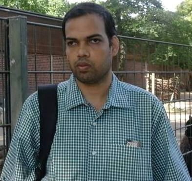
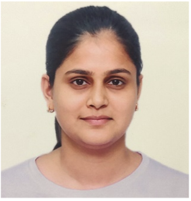

DST Center for Policy Research
National Institute of Science Education Research (NISER)
People
Dr. Amarendra Das
(Principal Investigator) Reader-F, School of Humanities & Social Sciences, NISER
Dr. Pranay Swain
Associate Professor, School of Humanities & Social Sciences, NISER

Dr. Chandra Sekhar Bahinipati
Assistant Professor, Humanities and Social Sciences, IIT Tirupati
Dr. Bibhunandini Das
Assistant Professor, Department of Economics, Berhampur University
Research Associate
Dr. Jayashree Parida has joined as a Project Scientist under the project entitled “DST Centre for
Policy Research on Energy Transition, and Tribal Education” at the School of Humanities and Social
Sciences, NISER, Bhubaneswar. She holds M.A. and M. Phil degrees in Sociology from Pondicherry
Central University, Puducherry. She has obtained her PhD in Sociology from the National Institute of
Technology, Rourkela, Odisha. Prior to joining NISER, she worked as a Project Scientist at
ICMR-Regional Medical Research Centre, Bhubaneswar. She has published 12 research papers in referred
national and international repute journals. She has presented research papers at national and
international conferences in India and abroad. She is also a reviewer in different international
journals. She is a member of the Indian Sociological Society and the International Sociological
Association. Her research interests include tribal education, health, gender and disaster
management.
Dr. John Kujur works as a Project Scientist at DST-Centre for Policy Research (National Institute of
Science Education and Research), Bhubaneswar. Prior to joining NISER, he worked with the University
of Leicester, UK and the Centre for Budget and Policy Studies, Bengaluru. He has a PhD in Economics
from the Centre for Development Studies, Thiruvananthapuram (Jawaharlal Nehru University). His
research interest lies in the areas of indigenous studies, development economics and labour
economics. He has researched the displacement and livelihood issues of the Adivasi population. He
has also explored the changing educational and occupational patterns of the Adivasi population. He
has publications in both international and national journals viz. Land Use Policy, Journal of South
Asian Development, Social Change, and Journal of Adivasi and Indigenous Studies. He has also written
on the issue of Adivasis in online portals viz. Round Table India and Nirveda Odisha.
Senior Project Associate

Dr. Avritti Srivastava has joined as a Senior Project Associate under the project entitled “DST Centre for Policy Research on Energy Transition, and Tribal Education” at the School of Humanities and Social Sciences, NISER, Bhubaneswar. She holds M.Sc. degrees in Renewable Energy from Centre of Excellence in Renewable Energy Education and Research, University of Lucknow, Lucknow. She got the prestigious DST-Inspire Fellowship for her doctoral degree. She has obtained her Ph.D. in Physical Sciences from the PV metrology group of CSIR-National Physical Laboratory, New Delhi, India. She has published 7 SCI research papers in repute journals as first author and more than 10 papers in collaboration. She has presented her research work in many international conferences. Her research interest includes Si solar cell processing, emerging solar PV and other renewable energy technologies.
Maheshkumar T. works as a Senior Project Associate at the DST-Centre for Policy Research (National Institute of Science Education and Research), Bhubaneswar. He holds an M.A. degree in Applied Economics from Pondicherry Central University, Puducherry and an M. Phil in Applied Economics from the Centre for Development Studies (CDS), JNU. He is interested in leveraging quantitative data to shape effective policy decisions. His keen interest lies in delving into research areas encompassing Ageing, Health, the Labor market, Economic Development, and Enterprises. His work has been featured in journals at the national level, and he has presented at both national and international conferences.